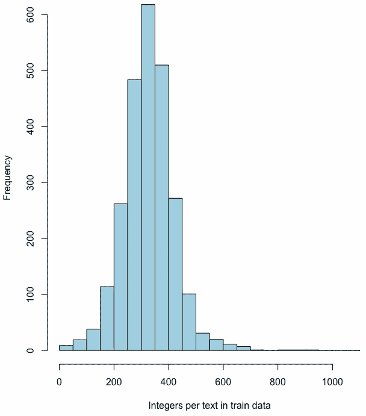
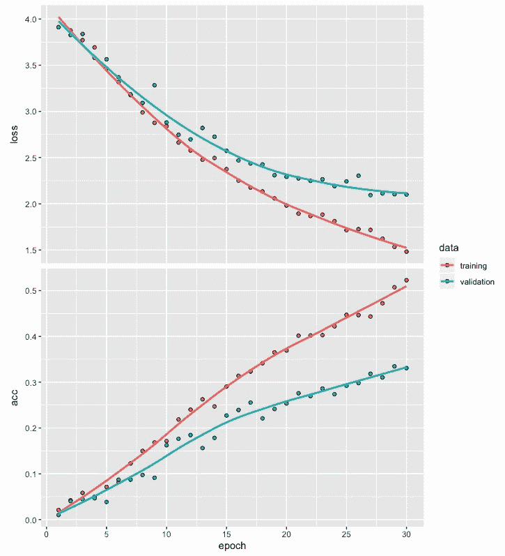
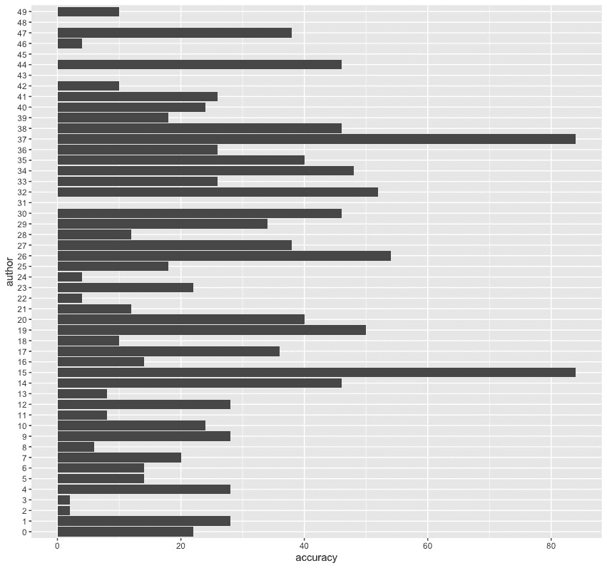
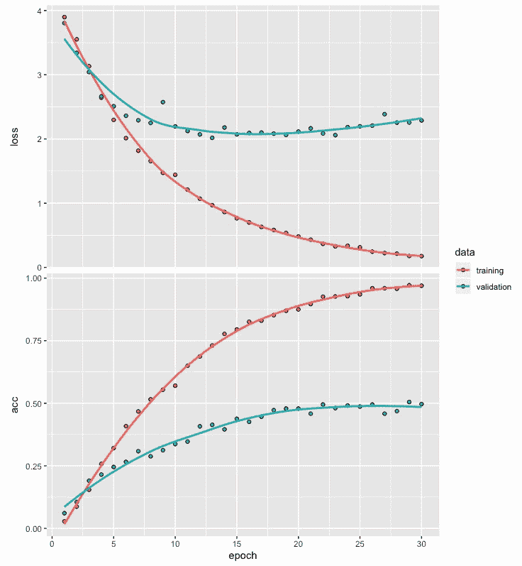
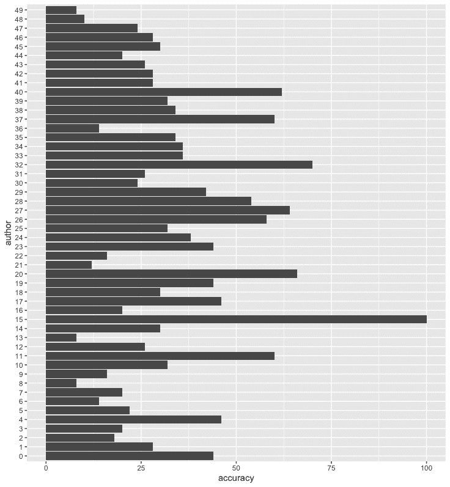

卷积神经网络(CNN)已经被发现在从数据中捕捉高级局部特征方面是有用的。另一方面，递归神经网络 ( RNNs )，比如长短期记忆 ( LSTM )，已经被发现在捕捉涉及文本等序列的数据中的长期依赖性方面很有用。当我们在同一模型架构中使用CNN和RNNs时，就产生了所谓的卷积递归神经网络 ( CRNNs )。
本章通过结合RNNs和CNN网络的优点，说明了如何将卷积递归神经网络应用于文本分类问题。此过程中涉及的步骤包括文本数据准备、定义卷积递归网络模型、训练模型和模型评估。
更具体地说，在本章中，我们将讨论以下主题:
在前面的章节中，当处理文本数据时，我们利用已经被转换成整数序列的数据来开发深度网络模型。在本章中，我们将使用需要转换成整数序列的文本数据。我们将从阅读我们将用来说明如何开发文本分类深度网络模型的数据开始。我们还将探索我们将使用的数据集，以便更好地理解它。
在本章中，我们将使用keras、deepviz和readtext库，如以下代码所示:
# Libraries used
library(keras)
library(deepviz)
library(readtext)
为了说明开发卷积递归网络模型所涉及的步骤，我们将利用reuter_50_50文本数据集，该数据集可从https://archive.ics.uci.edu/ml/datasets/Reuter_50_50#UCI机器学习库获得。
此数据集包含两个文件夹中的文本文件，一个文件夹用于存储定型数据，另一个文件夹用于存储测试数据:
我们可以通过从我们为UCI机器学习库提供的链接转到Data文件夹来访问reuter_50_50数据集。从这里，我们可以下载C50.zip文件夹。解压缩后，它包含一个包含C50train和C50test文件夹的C50文件夹。首先，我们将使用以下代码从C50train文件夹中读取文本文件:
# Reading Reuters train data
setwd("~/Desktop/C50/C50train")
temp = list.files(pattern="*.*")
k <- 1; tr <- list(); trainx <- list(); trainy <- list()
for (i in 1:length(temp)) {for (j in 1:50)
{ trainy[k] <- temp[i]
k <- k+1}
author <- temp[i]
files <- paste0("~/Desktop/C50/C50train/", author, "/*")
tr <- readtext(files)
trainx <- rbind(trainx, tr)}
trainx <- trainx$text
在前面代码的帮助下，我们可以将2500篇文章的数据从C50train文件夹读入trainx，并将关于作者姓名的信息保存到trainy。我们首先使用setwd函数将工作目录设置为C50train文件夹。C50train文件夹包含以50位作者命名的50个文件夹，每个文件夹包含相应作者写的50篇文章。我们将值1赋给k，并将tr、trainx和trainy初始化为一个列表。然后，我们创建一个循环，将作者的名字存储在trainy中，其中包含每篇文章的作者名字，并且trainx包含作者写的相应文章。注意，在读取这2500个文本文件的数据后，trainx还包含关于文件名的信息。使用最后一行代码，我们只保留了2，500个文本的数据，并删除了关于我们不需要的文件名的信息。
现在，让我们使用以下代码来查看来自训练数据的文本文件901的内容:
# Text file 901
trainx[901]
[1] "Drug discovery specialist Chiroscience Group plc said on Monday it is testing two anti-cancer compounds before deciding which will go forward into human trials before the end of the year.\nBoth are MMP inhibitors, the same novel class of drug as British Biotech Plc's potential blockbuster Marimastat, which are believed to stop cancer cells from spreading.\nIn an interview, chief executive John Padfield said Chiroscience hoped to have its own competitor to Marimastat in early trials next year and Phase III trials in 1998."
# Author
trainy[901]
[[1]]
[1] "JonathanBirt"
从前面的代码和输出中，我们可以观察到以下情况:
在阅读了训练数据的文本文件和作者姓名之后，我们可以对测试数据重复这个过程。
现在，我们将从位于C50文件夹中的C50test文件夹中读取文本文件。我们将使用以下代码来实现这一点:
# Reuters test data
setwd("~/Desktop/C50/C50test")
temp = list.files(pattern="*.*")
k <- 1; tr <- list(); testx <- list(); testy <- list()
for (i in 1:length(temp)) {for (j in 1:50)
{ testy[k] <- temp[i]
k <- k+1}
author <- temp[i]
files <- paste0("~/Desktop/C50/C50test/", author, "/*")
tr <- readtext(files)
testx <- rbind(testx, tr)}
testx <- testx$text
在这里，我们可以看到这段代码中唯一的变化是我们基于位于C50test文件夹中的测试数据创建了testx和testy。我们将2500篇文章从C50test文件夹读入testx，并将关于作者姓名的信息保存到testy。我们再次使用最后一行代码来保留测试数据中的2500个文本的数据，并删除文件名信息，这是我们的分析所不需要的。
既然我们已经创建了训练和测试数据，我们将执行数据预处理，以便我们可以开发一个作者分类模型。
在本节中，我们将准备一些数据，以便我们可以开发一个作者分类模型。我们将从使用标记将文章形式的文本数据转换成整数序列开始。我们还将做一些更改，通过唯一的整数来标识每个作者。随后，我们将使用填充和截断来为表示50位作者的文章的整数序列获得相同的长度。我们将通过将训练数据划分为训练和验证数据集，然后对响应变量执行一次性编码来结束这一部分。
我们将首先执行标记化，然后将文本形式的文章转换为整数序列。为此，我们可以使用以下代码:
# Tokenization
token <- text_tokenizer(num_words = 500) %>%
fit_text_tokenizer(trainx)
# Text to sequence of integers
trainx <- texts_to_sequences(token, trainx)
testx <- texts_to_sequences(token, testx)
# Examples
trainx[[7]]
[1] 98 4 41 5 4 2 4 425 5 20 4 9 4 195 5 157 1 18
[19] 87 3 90 3 59 1 169 346 2 29 52 425 6 72 386 110 331 24
[37] 5 4 3 31 3 22 7 65 33 169 329 10 105 1 239 11 4 31
[55] 11 422 8 60 163 318 10 58 102 2 137 329 277 98 58 287 20 81
[73] 3 142 9 6 87 3 49 20 142 2 142 6 2 60 13 1 470 8
[91] 137 190 60 1 85 152 5 6 211 1 3 1 85 11 2 211 233 51
[109] 233 490 7 155 3 305 6 4 86 3 70 4 3 157 52 142 6 282
[127] 233 4 286 11 485 47 11 9 1 386 497 2 72 7 33 6 3 1
[145] 60 3 234 23 32 72 485 7 203 6 29 390 5 3 19 13 55 184
[163] 53 10 1 41 19 485 119 18 6 59 1 169 1 41 10 17 458 91
[181] 6 23 12 1 3 3 10 491 2 14 1 1 194 469 491 2 1 4
[199] 331 112 485 475 16 1 469 1 331 14 2 485 234 5 171 296 1 85
[217] 11 135 157 2 189 1 31 24 4 5 318 490 338 6 147 194 24 347
[235] 386 23 24 32 117 286 161 6 338 25 4 32 2 9 1 38 8 316
[253] 60 153 27 234 496 457 153 20 316 2 254 219 145 117 25 46 27 7
[271] 228 34 184 75 11 418 52 296 1 194 469 180 469 6 1 268 6 250
[289] 469 29 90 6 15 58 175 32 33 229 37 424 36 51 36 3 169 15
[307] 1 7 175 1 319 207 5 4
trainx[[901]]
[1] 74 356 7 9 199 12 11 61 145 31 22 399 79 145 1 133 3 1 28 203
[21] 29 1 319 3 18 101 470 31 29 2 20 5 33 369 116 134 7 2 25 17
[41] 303 2 5 222 100 28 6 5
从前面的代码和输出中，我们可以观察到以下内容:
现在，我们来看看训练和测试数据中每篇文章的整数个数。我们可以用下面的代码做到这一点:
# Integers per article for train data
z <- NULL
for (i in 1:2500) {z[i] <- print(length(trainx[[i]]))}
summary(z)
Min. 1st Qu. Median Mean 3rd Qu. Max.
31.0 271.0 326.0 326.8 380.0 918.0
# Intergers per article for text data
z <- NULL
for (i in 1:2500) {z[i] <- print(length(testx[[i]]))}
summary(z)
Min. 1st Qu. Median Mean 3rd Qu. Max.
39.0 271.0 331.0 329.1 384.0 1001.0
根据前面的总结，我们可以得出以下结论:
训练数据的每个文本文件的整数数量直方图如下:

前面的训练数据的每个文本文件的整数直方图显示了整体模式，平均值和中值约为326。该直方图的尾部向高值方向略长，呈现出适度右偏或正偏的模式。
既然我们已经将文本数据转换成了一个整数序列，我们也将把火车和文本数据的标签转换成整数。
在为分类问题开发深度学习网络时，我们总是使用整数形式的响应或标签。训练和测试文本数据的作者姓名分别存储在trainy和testy中。trainy和testy都是2500个条目的列表，包含50个作者的名字。要将标签转换成整数，我们可以使用下面的代码:
# Train and test labels to integers
trainy <- as.factor(unlist(trainy))
trainy <- as.integer(trainy) -1
testy <- as.factor(unlist(testy))
testy <- as.integer(testy) -1
# Saving original labels
trainy_org <- trainy
testy_org <- testy
正如我们所看到的，要将包含作者姓名的标签转换成整数，我们需要取消它们的列表，然后使用从0到49的整数来表示这50位作者。我们也可以使用trainy_org和testy_org来保存这些原始的整数标签，以备后用。
接下来，我们将进行填充和截断，以使整数序列上的数据对于每篇文章都具有相等的长度。
在开发作者分类模型时，每个训练和测试文本数据的整数数量需要长度相等。我们可以通过填充和截断整数序列来实现这一点，如下所示:
# Padding and truncation
trainx <- pad_sequences(trainx, maxlen = 300)
testx <- pad_sequences(testx, maxlen = 300)
dim(trainx)
[1] 2500 300
这里，我们指定所有序列的最大长度，即maxlen，为300。这将截断项目中长于300个整数的任何序列，并向项目中短于300个整数的序列添加零。注意，对于填充和截断，已经使用了默认设置“pre ”,并且在代码中没有特别指出。
这意味着对于截断和填充，整数序列开头的整数会受到影响。对于整数序列末尾的填充和/或截断，我们可以在代码中使用padding = "post"和/或truncation = "post"。我们还可以看到trainx的尺寸显示为2,500 x 300的矩阵。
让我们看看火车数据中文本文件7和901的输出，如下所示:
# Example of truncation
trainx[7,]
[1] 5 157 1 18 87 3 90 3 59 1 169 346 2 29 52 425
[17] 6 72 386 110 331 24 5 4 3 31 3 22 7 65 33 169
[33] 329 10 105 1 239 11 4 31 11 422 8 60 163 318 10 58
[49] 102 2 137 329 277 98 58 287 20 81 3 142 9 6 87 3
[65] 49 20 142 2 142 6 2 60 13 1 470 8 137 190 60 1
[81] 85 152 5 6 211 1 3 1 85 11 2 211 233 51 233 490
[97] 7 155 3 305 6 4 86 3 70 4 3 157 52 142 6 282
[113] 233 4 286 11 485 47 11 9 1 386 497 2 72 7 33 6
[129] 3 1 60 3 234 23 32 72 485 7 203 6 29 390 5 3
[145] 19 13 55 184 53 10 1 41 19 485 119 18 6 59 1 169
[161] 1 41 10 17 458 91 6 23 12 1 3 3 10 491 2 14
[177] 1 1 194 469 491 2 1 4 331 112 485 475 16 1 469 1
[193] 331 14 2 485 234 5 171 296 1 85 11 135 157 2 189 1
[209] 31 24 4 5 318 490 338 6 147 194 24 347 386 23 24 32
[225] 117 286 161 6 338 25 4 32 2 9 1 38 8 316 60 153
[241] 27 234 496 457 153 20 316 2 254 219 145 117 25 46 27 7
[257] 228 34 184 75 11 418 52 296 1 194 469 180 469 6 1 268
[273] 6 250 469 29 90 6 15 58 175 32 33 229 37 424 36 51
[289] 36 3 169 15 1 7 175 1 319 207 5 4
# Example of padding
trainx[901,]
[1] 0 0 0 0 0 0 0 0 0 0 0 0 0 0 0 0
[17] 0 0 0 0 0 0 0 0 0 0 0 0 0 0 0 0
[33] 0 0 0 0 0 0 0 0 0 0 0 0 0 0 0 0
[49] 0 0 0 0 0 0 0 0 0 0 0 0 0 0 0 0
[65] 0 0 0 0 0 0 0 0 0 0 0 0 0 0 0 0
[81] 0 0 0 0 0 0 0 0 0 0 0 0 0 0 0 0
[97] 0 0 0 0 0 0 0 0 0 0 0 0 0 0 0 0
[113] 0 0 0 0 0 0 0 0 0 0 0 0 0 0 0 0
[129] 0 0 0 0 0 0 0 0 0 0 0 0 0 0 0 0
[145] 0 0 0 0 0 0 0 0 0 0 0 0 0 0 0 0
[161] 0 0 0 0 0 0 0 0 0 0 0 0 0 0 0 0
[177] 0 0 0 0 0 0 0 0 0 0 0 0 0 0 0 0
[193] 0 0 0 0 0 0 0 0 0 0 0 0 0 0 0 0
[209] 0 0 0 0 0 0 0 0 0 0 0 0 0 0 0 0
[225] 0 0 0 0 0 0 0 0 0 0 0 0 0 0 0 0
[241] 0 0 0 0 0 0 0 0 0 0 0 0 74 356 7 9
[257] 199 12 11 61 145 31 22 399 79 145 1 133 3 1 28 203
[273] 29 1 319 3 18 101 470 31 29 2 20 5 33 369 116 134
[289] 7 2 25 17 303 2 5 222 100 28 6 5
从前面的输出中，我们可以观察到以下情况:
接下来，我们将训练数据划分为训练和验证数据，在拟合模型时，训练和评估网络将需要这些数据。
在训练模型时，我们使用validation_split，它使用指定百分比的训练数据来评估验证错误。此示例中的训练数据包含第一作者的前50篇文章的数据，后面是第二作者的50篇文章的数据，依此类推。如果我们将validation_split指定为0.2，模型将基于前40位作者的前80%(或2000篇)文章进行训练，后10位作者撰写的后20%(或500篇)文章将用于评估验证错误。这将导致没有来自最后10个作者的输入被用于模型训练。为了解决这个问题，我们将使用以下代码将训练数据随机划分为训练数据和验证数据:
# Data partition
trainx_org <- trainx
testx_org <- testx
set.seed(1234)
ind <- sample(2, nrow(trainx), replace = T, prob=c(.8, .2))
trainx <- trainx_org[ind==1, ]
validx <- trainx_org[ind==2, ]
trainy <- trainy_org[ind==1]
validy <- trainy_org[ind==2]
正如我们所看到的，为了将数据划分为训练和验证数据，我们使用了80:20的分割。我们还使用了set.seed函数来实现可重复性。
在对训练数据进行划分之后，我们将对标签进行一次性编码，这有助于我们用值1表示正确的作者，用值0表示所有其他作者。
为了对标签进行一键编码，我们将使用以下代码:
# OHE
trainy <- to_categorical(trainy, 50)
validy <- to_categorical(validy, 50)
testy <- to_categorical(testy, 50)
这里，我们使用了to_categorical函数对响应变量进行一键编码。我们使用50来表示50个类别的存在，因为这些文章是由50个作者写的，我们计划使用他们写的文章作为输入来分类。
现在，数据已准备好开发卷积递归网络模型，用于根据作者撰写的文章进行作者分类。
在本节中，我们将利用同一网络中的卷积层和LSTM层。卷积递归网络架构可以用简单的流程图来描述:
在这里，我们可以看到流程图包含嵌入、卷积1D、最大池、LSTM和密集层。请注意，嵌入层始终是网络中的第一层，通常用于涉及文本数据的应用程序。嵌入层的主要目的是找到每个唯一单词的映射，在我们的例子中是500，并将其转换为一个更小的向量，我们将使用output_dim来指定。在卷积层，我们将使用relu激活函数。类似地，将用于LSTM和密集层的激活函数将分别为tanh和softmax。
我们可以使用下面的代码来开发模型架构。这也包括模型摘要的输出:
# Model architecture
model <- keras_model_sequential() %>%
layer_embedding(input_dim = 500,
output_dim = 32,
input_length = 300) %>%
layer_conv_1d(filters = 32,
kernel_size = 5,
padding = "valid",
activation = "relu",
strides = 1) %>%
layer_max_pooling_1d(pool_size = 4) %>%
layer_lstm(units = 32) %>%
layer_dense(units = 50, activation = "softmax")
# Model summary
summary(model)
___________________________________________________________________________
Layer (type) Output Shape Param #
===========================================================================
embedding (Embedding) (None, 300, 32) 16000
___________________________________________________________________________
conv1d (Conv1D) (None, 296, 32) 5152
___________________________________________________________________________
max_pooling1d (MaxPooling1D) (None, 74, 32) 0
___________________________________________________________________________
lstm (LSTM) (None, 32) 8320
___________________________________________________________________________
dense (Dense) (None, 50) 1650
===========================================================================
Total params: 31,122
Trainable params: 31,122
Non-trainable params: 0
___________________________________________________________________________
从前面的代码中，我们可以观察到以下情况:
在嵌入层之后，我们添加了一个带有32个滤波器的1D卷积层。在前面的章节中，我们在处理图像分类问题时使用了2D卷积层。在这个例子中，我们有涉及序列的数据，在这种情况下，1D卷积层更合适。对于该层，我们指定了以下内容:
卷积层之后是池层。以下是对池和后续层的一些注释:
接下来，我们将编译该模型，然后对其进行训练。
在本节中，我们将编译模型，然后使用训练和验证数据集，使用fit函数训练模型。我们还将绘制训练模型时获得的损失和精度值。
为了编译模型，我们将使用以下代码:
# Compile model
model %>% compile(optimizer = "adam",
loss = "categorical_crossentropy",
metrics = c("acc"))
这里，我们指定了adam优化器。我们使用categorical_crossentropy作为损失函数，因为标签是基于50个作者的。对于度量标准，我们指定了作者分类的准确性。
现在模型已经编译好了，可以开始训练了。
我们将使用以下代码来训练模型:
# Fitting the model
model_one <- model %>% fit(trainx, trainy,
epochs = 30,
batch_size = 32,
validation_data = list(validx, validy))
# Loss and accuracy plot
plot(model_one)
这里，我们使用trainx作为输入，使用trainy作为输出来训练模型。模型的训练进行30个时期，每批32个。为了评估训练过程中每个时期的验证损失和验证准确性，我们使用了validx和validy，这是我们之前通过从训练数据中抽取大约20%的随机样本而创建的。
基于30个时期中每个时期的训练和验证数据的损失和精度值存储在model_one中。以下是该数据的曲线图:

从前面的图中，我们可以得出以下结论:
接下来，我们将评估model_one，并使用训练和测试数据进行预测。
在本节中，我们将根据我们的培训和测试数据来评估模型。我们将通过使用训练和测试数据的混淆矩阵对每个作者进行正确分类来获得准确性，以获得进一步的洞察力。我们还将使用条形图来直观显示识别每个作者的准确性。
首先，我们将使用训练数据评估模型的性能。然后，我们将使用该模型来预测代表50位作者中每一位的类别。评估模型的代码如下:
# Loss and accuracy
model %>% evaluate(trainx, trainy)
$loss
[1] 1.45669
$acc
[1] 0.5346288
这里，我们可以看到，通过使用训练数据，我们获得了大约1.457的损失值和大约0.535的准确度。接下来，我们使用该模型来预测训练数据中文章的类别。这些预测然后被用于达到代表50个作者的50个类别中的每一个的准确度读数。用于实现这一点的代码如下:
# Prediction and confusion matrix
pred <- model %>% predict_classes(trainx_org)
tab <- table(Predicted=pred, Actual=trainy_org)
(accuracy <- 100*diag(tab)/colSums(tab))
0 1 2 3 4 5 6 7 8 9 10 11 12 13 14 15 16 17 18 19 20 21 22 23 24
82 40 30 10 54 46 54 82 8 56 46 36 76 18 52 90 50 56 8 66 80 24 30 46 32
25 26 27 28 29 30 31 32 33 34 35 36 37 38 39 40 41 42 43 44 45 46 47 48 49
46 88 62 22 64 76 2 74 88 72 74 76 86 70 60 86 38 32 0 48 6 24 76 8 22
在前面的代码中，为了节省空间，我们没有打印混淆矩阵的输出，因为它将是一个50 x 50的矩阵。然而，我们已经使用混淆矩阵中的信息，通过根据每个作者所写的文章正确预测他们来达到模型的准确性。我们获得的输出如下:

前面的条形图提供了关于每个作者的模型性能的进一步洞察:
使用训练数据评估了模型之后，我们将使用测试数据重复这个过程。
我们将使用该模型，通过以下代码从测试数据中获得损失和精度值:
# Loss and accuracy
model %>% evaluate(testx, testy)
$loss
[1] 2.460835
$acc
[1] 0.2508
从前面的代码中，我们可以看到基于测试数据的损失值和准确度值分别是2.461和0.251。这两个结果都比我们基于训练数据获得的结果差，这是通常预期的。如下面的代码所示，预测每个作者的类别并计算分类的准确性，将有助于提供进一步的见解:
# Prediction and confusion matrix
pred1 <- model %>% predict_classes(testx)
tab1 <- table(Predicted=pred1, Actual=testy_org)
(accuracy <- 100*diag(tab1)/colSums(tab1))
0 1 2 3 4 5 6 7 8 9 10 11 12 13 14 15 16 17 18 19 20 21 22 23 24
22 28 2 2 28 14 14 20 6 28 24 8 28 8 46 84 14 36 10 50 40 12 4 22 4
25 26 27 28 29 30 31 32 33 34 35 36 37 38 39 40 41 42 43 44 45 46 47 48 49
18 54 38 12 34 46 0 52 26 48 40 26 84 46 18 24 26 10 0 46 0 4 38 0 10
混淆矩阵中的信息存储在tab1中，用于达到正确分类来自每个作者的文章的准确度。结果如下:

测试数据的大约25%的总体准确度已经暗示了基于测试数据的明显较差的性能。这也可以在前面的条形图中看到。让我们来看看从中可以得出的一些观察结果:
从这个初始示例中，我们可以看到我们的模型分类性能需要进一步改进。我们观察到的训练和测试数据之间的性能差异也表明了过度拟合问题的存在。因此，我们需要对模型架构进行更改，以获得不仅在分类性能方面提供更高准确性，而且在训练和测试数据之间显示一致性能的模型。我们将在下一节探讨这一点。
在这一节中，我们将探讨可以对模型架构和其他设置进行的更改，以提高作者分类性能。我们将进行两个实验，在这两个实验中，我们将把最常用单词的数量从500增加到1，500，并将整数序列的长度从300增加到400。对于这两个实验，我们还将在池层之后添加一个dropout层。
我们将在这个实验中使用的代码如下:
# Model architecture
model <- keras_model_sequential() %>%
layer_embedding(input_dim = 1500,
output_dim = 32,
input_length = 400) %>%
layer_conv_1d(filters = 32,
kernel_size = 5,
padding = "valid",
activation = "relu",
strides = 1) %>%
layer_max_pooling_1d(pool_size = 4) %>%
layer_dropout(0.25) %>%
layer_lstm(units = 32) %>%
layer_dense(units = 50, activation = "softmax")
# Compiling the model
model %>% compile(optimizer = "adam",
loss = "categorical_crossentropy",
metrics = c("acc"))
# Fitting the model
model_two <- model %>% fit(trainx, trainy,
epochs = 30,
batch_size = 16,
validation_data = list(validx, validy))
# Plot of loss and accuracy
plot(model_two)
从前面的代码中，我们可以观察到以下情况:
基于30个时期中每个时期的训练和验证数据的损失和准确度值存储在model_two中。结果可以在下面的图中看到:

前面的图表明验证数据的损失和准确度值在最后几个时期保持不变。然而，它们不会变质。接下来，我们将使用evaluate函数根据训练和测试数据获得损耗和精度值，如下所示:
# Loss and accuracy for train data
model %>% evaluate(trainx, trainy)
$loss
[1] 0.3890106
$acc
[1] 0.9133034
# Loss and accuracy for test data
model %>% evaluate(testx, testy)
$loss
[1] 2.710119
$acc
[1] 0.308
从前面的代码和输出中，我们可以观察到，与以前的模型相比，定型数据的损失和准确性值显示了更好的结果。但是对于测试数据来说，虽然精度值更好，但是损耗值稍差。
通过对来自每个作者的测试数据中的文章进行正确分类而获得的准确度可以在下面的条形图中看到:

从前面的柱状图中，我们可以观察到以下情况:
在下一个实验中，我们将着眼于我们可以做出的更多改变，以进一步提高作者的分类性能。
本实验将使用的代码如下:
# Model architecture
model <- keras_model_sequential() %>%
layer_embedding(input_dim = 1500,
output_dim = 32,
input_length = 400) %>%
layer_conv_1d(filters = 64,
kernel_size = 4,
padding = "valid",
activation = "relu",
strides = 1) %>%
layer_max_pooling_1d(pool_size = 4) %>%
layer_dropout(0.25) %>%
layer_lstm(units = 32) %>%
layer_dense(units = 50, activation = "softmax")
# Compiling the model
model %>% compile(optimizer = "adam",
loss = "categorical_crossentropy",
metrics = c("acc"))
# Fitting the model
model_three <- model %>% fit(trainx, trainy,
epochs = 30,
batch_size = 8,
validation_data = list(validx, validy))
# Loss and accuracy plot
plot(model_three)
从前面的代码中，我们可以观察到以下情况:
基于30个时期中每个时期的训练和验证数据的损失和准确度值存储在model_three中。该数据的曲线图如下:

损耗和精度的曲线显示如下:
现在，我们将使用evaluate函数根据训练和测试数据获得损耗和精度值，如下所示:
# Loss and accuracy for train data
model %>% evaluate(trainx, trainy)
$loss
[1] 0.1093387
$acc
[1] 0.9880419
# Loss and accuracy for test data
model %>% evaluate(testx, testy)
[1] 3.262691
$acc
[1] 0.337
从前面的代码和输出中，我们可以观察到以下内容:
下面的条形图显示了在测试数据中正确分类文章作者的准确性:

从前面的柱状图中，我们可以观察到以下情况:
在这一部分，我们进行了两个实验，实验表明该模型的作者分类性能可以进一步提高。
在这一章中，我们举例说明了基于作者所写的文章开发用于作者分类的卷积递归神经网络的步骤。卷积递归神经网络将两个网络的优点结合成一个网络。一方面，卷积网络可以从数据中捕获高级局部特征，而另一方面，递归网络可以捕获涉及序列的数据中的长期依赖性。
首先，卷积递归神经网络使用一维卷积层提取特征。然后，将这些提取的特征传递给LSTM递归层，以获得隐藏的长期依赖关系，然后将这些长期依赖关系传递给完全连接的密集层。这个密集层根据文章中的数据获得每个作者正确分类的概率。尽管我们将卷积递归神经网络用于作者分类问题，但是这种类型的深度网络可以应用于涉及序列的其他类型的数据，例如自然语言处理、语音和视频相关问题。
下一章将是这本书的最后一章，将介绍一些技巧、窍门和未来的道路。为不同类型的数据开发深度学习网络既是艺术也是科学。每一项应用都会带来新的挑战，同时也是我们学习和提高技能的机会。在下一章中，我们将总结一些这样的经验，这些经验在某些应用中非常有用，有助于节省大量时间来获得性能良好的模型。